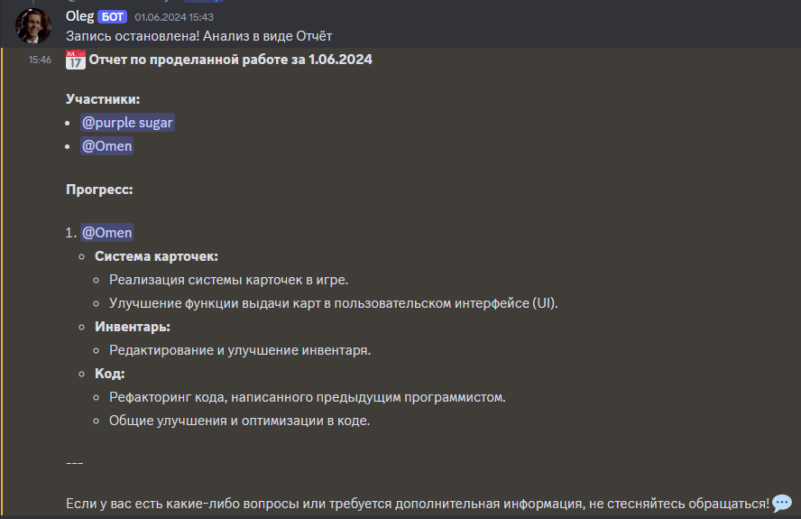

Никита Ищенко
Junior+/Middle Unity-разработчик
- +7(951)491-12-99
- ni.20022002@gmail.com
- Новочеркасск

Имею значительный опыт в разработке игр на Unity, успешно справляюсь с задачами любой сложности. Много работал над сетевыми игровыми решениями, а также с жанрами Roguelike, FPS. Знаком с различными подходами и паттернами проектирования, активно работаю с системами контроля версий. Готов применять свои знания и навыки для достижения общих целей и развития в команде профессионалов.
Подробнее о проекте

Стек проекта
- Python
- Discord.py
- Whisper и OpenAI
Процесс разработки
Разработка бота включала несколько этапов:
- Анализ требований. На этом этапе были определены функциональные и технические требования к боту, а именно запись и транскрибирование разговора, его анализ и нормальный UI с подсказками для команд.
- Проектирование. На этом этапе были выбраны оптимальные технологии и механизм работы бота
- Разработка и тестирование. На этом этапе бот был полностью разработан и протестирован, хоть анализ и занимает некоторое время, но зато экономит время для тех кому нужна отчётность в работе компании.